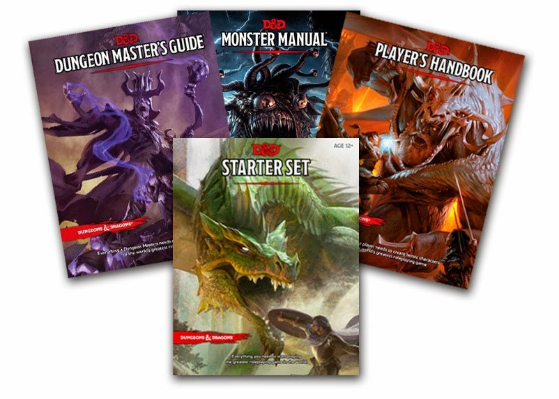
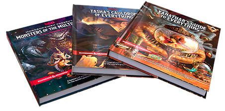
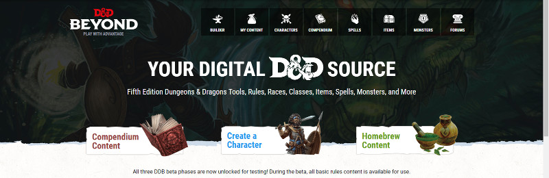

D&D 5
Cette section présente des informations générales sur la cinquième édition du jeu de rôle Dungeons & Dragons / Donjons et Dragons, ainsi que la traduction de divers articles publiés sur le site de son éditeur, Wizards of the Coast (WotC). Vous y trouverez entre autres :
- Une liste des livres de règles, des aventures officielles et des sets de dés publiés à ce jour.
- Une présentation des différentes storylines de D&D 5.
- Des articles du site D&D Beyond et de la série Behind the Screens qui propose des conseils aux MD.
- Des articles de la série Sage Advice qui répond aux doutes sur l'interprétation de certaines règles.
- Des articles de la série Unearthed Arcana qui propose de nouvelles règles en version béta (pas encore officielles donc).
- Divers petits quiz pour vérifier vos connaissances sur différents sujets traités sur ce site.
- Une synthèse de l'histoire de D&D, de 1974 à nos jours, et un point sur la traduction de D&D 5 en français et en Europe.
- Une liste de romans sur les Royaumes Oubliés publiés depuis la sortie de D&D 5, avec critiques et résumés.
Infos diverses
Interview de Jeremy Crawford - WotC [19/01/22]
Des infos et des confirmations sur le Monsters of the Multiverse.
33 races pour PJ, présentées sous le nouveau format introduit depuis Tasha’s Cauldron of Everything, qui acte la séparation entre les caractéristiques et la race afin de rendre toutes celles-ci aussi flexibles que les humains en termes de culture et de personnalité. Avant certaines races étaient moins efficaces que d'autres pour une classe donnée, maintenant les joueurs pourront vraiment jouer tout ce qu'ils veulent et ne plus être poussés vers certaines classes en particulier à cause du choix de leur race.
WotC a aussi retouché les blocks stats de nombreux monstres afin que leur FP soit réellement adapté et que, quel que soit le MD, la menace soit plus ou moins la même, alors qu'avant le FP d'un créature dépendait beaucoup de la manière qu'avait le MD de la jouer. Les FP ne bougent pas, ce sont les capacités qui sont modifiées pour mieux coller au FP.
Monsters of the Multiverse détaille pour la première fois l'histoire complète des goblinoïdes. On y explique leur origine féerique, comment ils ont ensuite été conquis par Maglubiyet, et comment ils sont devenus des forces maléfiques dans de nombreux mondes.
Enfin, les créatures sont toutes classées par ordre alphabétique en fonction de leur nom, et non plus en fonction de leur catégorie. Et il y aura de nouvelles créatures, comme le Dolphin Delighter, un dauphin télépathique doué d'une capacité de téléportation.
Races pour PJ du Monsters of the Multiverse [11/01/22]
Nerd Immersion sur Youtube a eu accès au sommaire du prochain Monsters of the Multiverse, qui se présente plus ou moins comme une compilation du Volo's Guide to Monsters et du Mordenkainen's Tome of Foes. Voici donc la liste des 33 races pour PJ que proposera cet ouvrage, retouchées sur la base des nouvelles normes de D&D :
- Aarakocra, Aasimar
- Bugbear
- Centaur, Changeling
- Deep Gnome, Duergar
- Eladrin
- Fairy, Firbolg
- Genasi (Earth, Wind & Fire Air, Earth, Fire, Water), Githyanki, Githzerai, Goblin, Goliath
- Harengon, Hobgoblin
- Kenku, Kobold
- Lizardfolk
- Minotaur
- Orc
- Satyr, Sea Elf, Shadar Kai, Shifter
- Tabaxi, Turtle, Triton
- Yuan-ti
Toutes ces races ont maintenant les bonus de caractéristiques flexibles (+2/+1 ou +1/+1/+1) et il semble que WotC ait décidé d'éliminer le trait Sensibilité au soleil pour les PJ (mais pas pour les créatures) et de définir toutes les vitesses à 9 mètres, quelle que soit la taille du PJ (P ou M).
À noter également l'absence du forgelier, qui va sans doute devenir une race core dans le prochain Player's Handbook, de la même manière que la classe d'artificier n'est plus liée à Eberron depuis qu'elle est parue dans le Tasha's Cauldron of Everything.
Mise au point sur les derniers errata [16/12/21]
Ray Winninger, qui on le rappelle est le big boss de D&D chez Wizards, a fait une mise au point concernant les derniers errata parus, en particulier sur le pourquoi des changements concernant les alignements, qui ont été selon lui mal interprétés. En voici le résumé :
Le multiverse. D&D n'est plus focalisé sur les Royaumes Oubliés, de nombreux autres settings ont été publié pour D&D 5, et les règles doivent s'adapter à cela. Si sur la Côte des épées les orcs sont mauvais, les nains loyaux et les halfelins bons, ce n'est pas forcément le cas dans Exandria, Eberron ou Darksun.
Alignement. Les changements sur l'alignement concernent principalement les PJ. Chaque individu est unique, les règles de création de personnage n'ont pas à diriger un PJ vers un alignement en fonction de sa race. Mais cela n'affecte en rien l'univers dans lequel le PJ va évoluer.
Personnalité des créatures. Le fait d'avoir ôté du Volo's Guide to Monsters certains paragraphes laissant entendre que par exemple tous les mind flayers et les beholders avaient la même personnalité, a pour intention de pousser les MD à créer des PNJ uniques et intéressants. Cela ne change pas la nature profonde de ces créatures.
En fait, tous ces changements n'ont d'autres buts que de permettre aux MD et aux joueurs de créer librement n'importe quel univers ou personnage, afin de rendre leurs aventures encore plus mémorables.
Changements de traductions par Wizards France [12/10/21]
Plusieurs membres de la communauté d'AideDD ont répondu à mon appel de l'édito du 07/10/21 et on a maintenant un retour très précis des changements de traductions dans le nouveau PH. Et ils sont très nombreux, c'est une vraie reprise, pas une retouche. Le 11 septembre dernier j'avais posté les principales différences de traductions en me basant sur le livret des règles du Kit d'initiation diffusé librement par Wizards France. Mais force est de constater que ce livret n'est pas complètement à jour, le PH intègre de nombreux nouveaux changements. J'actualise donc la liste en me basant maintenant sur le nouveau PH.
Race
Sangdragon -> Drakéide. Wow, changer le nom d'une race, c'est couillu !
Classe
Sorcier -> Occultiste. Wow, changer le nom d'une classe, c'est couillu !
Invocations occultes -> Manifestations occultes
Plein de capacités ont aussi changé de nom. Plus de détails sur le forum.
Langues
Sylvain -> Sylvestre
Équipement
Potion de soins -> Potion de guérison. En ligne avec le fait que Healing se traduisait partout par Guérison.
Parchemin magique -> Parchemin de sort
Dons
Adepte des éléments-> Adepte élémentaire
Expert du combat -> Adepte martial
Mage offensif -> Artillerie magique
Grand maître d'armes -> Cogneur lourd
Légèrement protégé -> Protection légère
Lourdement protégé -> Protection lourde
Spécialiste des armes d'hast -> Maître d'hast
Spécialiste des armures intermédiaires -> Maître des armures intermédiaires
Spécialiste des armures lourdes -> Maître des armures lourdes
Spécialiste des boucliers -> Maître des boucliers
Ritualiste -> Magie rituelle
Résistant -> Résilient
Modérément protégé -> Protection intermédiaire
Meneur exaltant -> Figure de proue
Endurant -> Gaillard
Caractéristiques
Perspicacité -> Intuition
Supercherie -> Tromperie
Partir à l'aventure
Court repos -> Repos court
Long repos -> Repos long
Combat
Se précipiter -> Foncer
Empoignade -> Lutte
Abri important -> Abri supérieur
Conditions
Empoigné -> Agrippé. J'avais disserté sur ce terme (empoigné signifie en français « saisir en serrant avec la main », ce qui ne correspond pas à la définition voulue, surtout vu le nombre de créatures du MM qui n'ont pas de main, alors qu'agrippé signifie « saisir vivement et tenir avec force »).
Neutralisé [Incapacitated] reste tel quel. Incapable d'agir me parait mieux correspondre à la définition qui est de ne pouvoir effectuer aucune action ni réaction. Je vais indiquer les deux.
Terrorisé -> Effrayé. J'avais disserté sur ce terme (tous mes dicos me donnent effrayé comme traduction de frightened ; c'est la peur [fear], comme indiqué dans le PH en VO. Terrorisé c'est autre chose, c'est un autre niveau ; c'est la terreur).
Dépenses
La traduction de wretched reste mendiant alors que, là aussi, tous mes dictionnaires indiquent que ce devrait être Misérable.
La traduction de squalid reste misérable alors que, là aussi, tous mes dictionnaires indiquent que ce devrait être Sordide.
Incantations
Tour de magie -> Sort mineur
Durée d'incantation -> Temps d'incantation
Sorts
83 changements de noms ! Pour beaucoup c'est juste changer le verbe en substantif, comme Invoquer un céleste -> Invocation de céleste, ce qui respecte la tradition brisée par BBE de ne pas mettre de verbe dans le nom des sorts, comme cela était le cas dans toutes les éditions précédentes en VF.
Plus de détails sur le forum, mais parmi les autres changement notons :
Amis -> Faux amis
Appétit d'Hadar -> Voracité de Hadar
Balisage -> Rayon traçant
Boule de feu à explosion retardée -> Boule de feu à retardement
Briser -> Fracassement
Carquois magique -> Vif carquois
Carreau ensorcelé -> Trait ensorcelé
Chauffer le métal -> Métal brûlant
Coercition mystique -> Quête
Contingence -> Anticipation
Déplacer la terre -> Glissement de terrain
Dominer un humanoïde -> Domination de personne
Envoi de message -> Communication à distance
Envoûtement -> Discours captivant
Épargner les mourants -> Stabilisation
Étrangeté -> Ennemi subconscient
Explosion occulte -> Décharge occulte
Feindre la mort -> Etat cadavérique
Fléau -> Imprécation
Formes animales -> Métamorphose animale
Tous les sorts de Smite passent de Frappe XXX -> Châtiment XXX. C'est cohérent.
Glyphe de protection -> Glyphe de garde
Gourdin magique -> Crosse des druides
Invisibilité supérieure -> Invisibilité suprême
Invoquer un tir de barrage -> Hérissement de projectiles
Invoquer une volée de projectiles -> Invocation de volée
Jeter une malédiction -> Malédiction
Léger comme une plume -> Feuille morte
Lever une malédiction -> Délivrance des malédictions
Marche sur l'eau -> Marche sur l'onde
Marche sur le vent -> Vent divin
Non-détection -> Antidétection
Nuage mortel -> Brume mortelle
Nuage puant -> Nuage nauséabond
Œil magique -> Œil du mage
Pas brumeux -> Foulée brumeuse
Peur -> Terreur. Là je comprend pas...
Portail magique -> Portail arcanique
Prière de soins -> Prière de guérison
Produire une flamme -> Flammes
Relever les morts -> Rappel à la vie
Répulsion/Attirance -> Aversion/Attirance
Restauration inférieure -> Restauration partielle
Restauration supérieure -> Restauration suprême
Revigorer -> Retour à la vie
Séquestration -> Dissimulation suprême
Soin des blessures -> Soins
Soin des blessures de groupe -> Soins de groupe
Transport végétal -> Voie végétale
Tromperie -> Double illusoire
Trouver les pièges -> Détection des pièges
Trouver un chemin -> Orientation
Trouver une monture -> Appel de destrier
Viser juste -> Coup au but
Voir l'invisible -> Détection de l'invisibilité
Plans
La féerie sauvage -> La Féerie
L'Obscur -> la Gisombre
Monstres
Mastiff -> Molosse
Hibours et Orc restent tels quels.
Bec de hache -> Autrache
Roc -> Ruhk
Homme-lézard -> Saurial
Punaise de feu géante -> Scarabée de feu géant
Homme-poisson -> Thalasséen
Stirge -> Strige
Créature artificielle -> artificiel
Créature monstrueuse -> monstruosité
Le futur de D&D [26/09/21]
C'est officiel, une nouvelle édition (D&D 5.5, D&D 6, Anniversary Edition, ou quel que soit son nom) sortira en 2024 pour les 50 ans de D&D. Et elle sera compatible avec D&D 5.
Wizards confirme par ailleurs la sortie de 2 settings classiques en 2022 (les noms ne sont toujours pas dévoilés) sous un nouveau format et un troisième setting classique pour 2023. Ils travaillent aussi sur 2 settings complètement nouveaux, mais qu'ils ne sont pas encore sûr à 100% de sortir.
Le Rules Expansion Gift Set a été également annoncé pour le 25 janvier 2022. Il s'agit d'un coffret regroupant le Xanathar's Guide to Everything + Tasha's Cauldron of Everything + Monsters of the Multiverse (plus un écran). Ce dernier livre est nouveau et compilera et mettra à jour plus de 30 races pour PJ et plus de 250 monstres, non liés à un univers particulier, parus dans des suppléments précédents comme le Volo's Guide to Monsters.
Les blocs de stat seront repris, en particulier les sorts seront convertis en actions pour que le MD n'ait plus à gérer les emplacements de sorts des PNJ. Cela permettra aussi d'affiner le FP des créatures, le choix des sorts selon le MD devenant moins important. Détail, tous les monstres seront classés par ordre alphabétique, fini le Glabrezu qu'il faut chercher dans les D (de démons) au lieu des G. De nombreuses illustrations seront nouvelles.
Calendrier de sortie des livres de D&D 5 en VF chez WotC France [02/09/21]
WotC France annonce un retard dû à des problèmes de logistique pour la sortie du triptyque (PH, DMG, MM) et de l'Essentiel, préalablement annoncés pour le 24 septembre. La nouvelle date prévue est pour le 8 octobre.
Mais il y a encore plus intéressant ! WotC France propose sur son site la « Fiche de personnage 5ème édition » et à ma grande surprise, je vois qu'au niveau des compétences, ils ont remplacé le terme Supercherie de BBE par celui de Tromperie, comme sur AideDD. En fait ils ont repris telle quelle la feuille de personnage d'AideDD (PDF modifiable) au lieu de mettre celle de BBE (une erreur de tipo sur la feuille d'AideDD également présente sur la leur le confirme), comme le permet la Fan Content Policy. Nous en sommes très honorés !
Interview de Jeremy Crawford - WotC [21/07/21]
WotC a fourni des éclaircissements sur ce qu'ils considèrent comme « canon » à D&D 5.
Pendant de nombreuses années, le studio Dungeons & Dragons RPG a considéré les romans, les jeux vidéo et les bandes dessinées D&D comme de merveilleuses expressions de la narration et de la tradition de D&D, mais ils ne sont pas canoniques pour le jeu de rôle. Nous ne voulons pas que les MD pensent que, pour faire fonctionner le jeu, ils ont besoin de lire un certain nombre de romans. Nous voulons que vous les lisiez pour le plaisir de les lire, pas comme un devoir. Les romans ne sont qu'une version de l'histoire, aussi merveilleuse soit-elle. Nous espérons juste que vous vous en inspirerez si vous prenez du plaisir à les lire. C'est comme cela que nous voyons tous les romans, et il en va de même pour les jeux vidéo ou pour les bandes dessinées D&D.
Ce qui est officiel dans le jeu de rôle D&D, c'est uniquement ce qui apparaît dans les produits du jeu de rôle D&D. Fondamentalement, si un événement n'est pas apparu dans un livre depuis la sortie de D&D 5 en 2014, nous ne le considérons pas comme canonique pour le jeu.
Ray Winninger de WotC sur Twitter [14/06/21]
Le boss de D&D a rappelé que le 16 juillet sera présenté lors du D&D Live 2021 avec G4 ce fameux livre mystère de James Wyatt qui sortira en octobre 2021. Mais il a surtout annoncé que WotC travaille sur deux settings classiques. Le premier, supervisé par Chris Perkins, est pratiquement bouclé. Le deuxième, supervisé par Wesley Schneider, démarre à peine. Les deux sont prévus pour sortir en 2022 sous un format « jamais vu » jusque là. Mais ça restera des livres ; Ray précise qu'il ne se réfère pas à un format numérique. Wizards travaille aussi déjà sur deux autres settings complètement nouveaux (pas des crossovers avec Magic: The Gathering). Et c'est pas fini, Wizards va revenir sur un setting qu'ils ont déjà couvert (peut-être les Royaumes Oubliés, opinion personnelle). Ça fait donc 5 settings en préparation. Toutefois, comme il l'a rappelé, au final WotC ne publie pas forcément tous les ouvrages sur lesquels ils travaillent.
Ah, j'oubliais, il y aura aussi en septembre un The Witchlight Carnival - Dice & Miscellany.
WotC supervisera les versions localisées de D&D en direct [10/06/21]
Cela commencera par le français, l'italien, l'allemand et l'espagnol. Et WotC semble ambitieux, c'est bien.
Leurs équipes débutent la traduction de plusieurs nouveaux titres et entreprennent des relectures et mises à jour approfondies des traductions existantes. Le 24 septembre ressortiront les premiers produits : les trois livrets de règles de base (à 39,99 € en France, Allemagne, Italie et Espagne) et l'Essentiel (19.99 €), pour la première fois en français. Ces ouvrages seront mis à jour avec les dernières corrections des livres anglais originaux, des corrections de coquilles et la révision de la traduction de certains termes. Les dates de sortie pour les quatre langues seront harmonisées chaque fois que cela sera possible. Cerise sur le gâteau, un drapeau apparaîtra désormais sur la tranche des livres, pour identifier rapidement leur langue. Enfin, WotC dit travailler pour que D&D soit au catalogue de toujours plus de magasins, à la fois en ligne et dans les magasins physiques.
D&D Studio Blog [21/04/21 puis édité]
Wizards ouvre aujourd'hui un blog pour les membres du « Studio D&D », l'équipe en charge chez eux du jeu de rôle papier D&D, divisée en 4 départements : Game Design, Art, Production et Product Management. Le blog est introduit par Brandy Camel, D&D Community Manager, et Ray Winninger, Executive Producer, le big boss de D&D chez Wizards. Les 5 Products Leads du studio, les responsables d'un livre/d'un projet, sont Jeremy Crawford, Amanda Hamon, Chris Perkins, Wesley Schneider et James Wyatt. Ils indiquent par exemple que seuls 50 % des projets lancés sont finalement publiés, et le blog fait le point sur les 5 produits de l'année 2021 :
- Candlekeep Mysteries (déjà sorti)
- Van Richten’s Guide to Ravenloft (déjà annoncé)
- une grande aventure pour une nouvelle storyline par Chris Perkins qui sera annoncée le 16 juillet (ce sera Wild Beyond the Witchllight)
- un nouveau concept par James Wyatt (ce sera Fizban's Treasury of Dragons)
- un nouveau projet mené par Amanda Hamon, ex Kobold Press, maintenant Senior Designer chez WotC (ce sera Strixhaven: A Curriculum of Chaos)
Planning des sorties en Europe [17/04/21]
Plus qu'une news, ceci est un billet d'humeur entrecoupé de news.
Alors qu'Asmodée France, via Novalis (un coup toi, un coup moi, je ne comprend pas la logique de communication) annonce finalement Les contes du Portail béant pour ce mois-ci, avril 2021, beaucoup interprètent cela comme le déblocage de la machine et s'attendent à un flot de livres en VF dans les semaines qui viennent. Je l'espère, mais je serais plus prudent. Si l'on regarde la situation à l'international, c'est plus complexe.
En Italie, Asmodée a carrément annoncé que Wizards reprenait la trad en direct et qu'ils n'assureraient donc plus la traduction et la promotion (community management) de la gamme, juste la logistique. Ils viennent de sortir Eberron et ont quitté de leur site les annonces des ouvrages qui étaient prévus dans les mois prochains, comme le Volo's Guide to Monsters ou Curse of Strahd. Le planning dépend directement de Wizards maintenant. Exit donc GF9 en Italie à priori.
En Espagne, EDGE, filiale d'Asmodée, a sorti comme prévu Storm King's Thunder, mais n'annonce sur son site plus aucun autre projet de traduction.
En France, on annonce donc bien Les contes du Portail béant, qui était surement déjà imprimé, mais rien sur la suite. Et mes derniers courriers à Asmodée restent sans réponse.
En Allemagne ils ont sorti Eberron en avril comme prévu et semble attendre maintenant. Mais là-bas c'est Ulisses Spiele qui gère, pas Asmodée.
Bref, j'espère me tromper, mais je n'écarte pas le fait que l'embrouille entre WotC/GF9/BBE au sujet d'H&D ait eu plus de conséquences que prévues, en particulier le fait de pouvoir reprendre sans problème la trad de BBE par exemple...
4 départs chez D&D Beyond [04/02/21]
James Haeck, Todd Kenrick, Lauren Urban et Adam Bradford, 4 figures de D&D Beyond, quittent la compagnie. D&D Beyond assure qu'en aucun cas cela signifie que la société va mal. Todd a annoncé aller chez Codename Entertainment pour s'occuper principalement du jeu Idle Champions of the Forgotten Realms, Lauren rejoint également Codename Entertainment en tant que Community Manager, et Adam passe chez Demiplane.
D&D Celebration 2020 [20/09/20]
WotC a communiqué lors de cet événement que dans les années qui viennent ils allaient publier pour D&D 5 trois univers classiques de D&D très attendus par les fans, et réaliser plus d'interactions entre D&D et Magic: The Gathering. Pas plus de précisions n'ont été communiquées, mais concernant les univers on s'attend en priorité d'après certains sondages aux US à Dark Sun et Dragonlance, suivi de Spelljammer, puis Planescape ou Greyhawk.
D&D et diversité [17/06/20]
Communiqué de WotC au sujet des conséquences de l'actualité sur les prochains développements de D&D. Personnellement je suis favorable à laisser de côté les sujets sociétaux quand je joue à D&D, mais quand cela a une conséquence directe sur les règles, je pense qu'il est bon d'en parler sur AideDD. En résumé, WotC annonce :
- vouloir revoir la présentation faite des orcs et des drows en ne les présentant plus comme des créatures mauvaises par nature.
- avoir modifié le texte des aventures Tomb of Annihilation et Curse of Strahd pour y quitter des références et des stéréotypes raciaux.
- sortir cette année un livre qui permettra de customiser les origines de son personnage, dont les bonus de caractéristique. Le mot « race » n’apparaît pas dans le communiqué ; on peut donc aussi penser qu'à terme il disparaîtra des livres (comme l'a fait déjà Paizo pour PRPG 2).
- vouloir promouvoir encore plus la diversité dans ses équipes, rédacteurs et artistes.
Si vous tombez un peu des nues en lisant tout cela, voici deux liens en anglais (Dungeons & Dragons Stumbles With Its Revision Of The Game's Major Black Culture et Why D&D is a better game with Ancestry & Culture) qui en disent plus sur les griefs faits à D&D de nos jours.
Annonce de Black Book Éditions [23/12/19]
Suite aux rumeurs du week-end sur l'arrêt de D&D 5 en VF, BBE a publié le communiqué suivant sur son site :
Chers clients, chers fans de Dungeons & Dragons,
Une décision de notre partenaire en charge des licences internationales Dungeons & Dragons nous contraint de cesser immédiatement la distribution et la vente des produits de la gamme Dungeons & Dragons en français. En vigueur depuis le 19 décembre 2019 et pour une durée indéterminée, cette décision affecte à la fois la boutique en ligne de Black Book Editions et notre distributeur Novalis chez qui les boutiques ne pourront plus s'approvisionner. Black Book Editions déplore cette décision qui pénalise avant tout les clients et les fans francophones de la gamme, ainsi que le réseau de nos boutiques partenaires, qui plus est à cette période de l'année. Nous étudions avec attention les éléments dont nous disposons et formulerons nos remarques début janvier. D’ici là, toutes les autres gammes de Black Book Editions restent évidemment disponibles, directement via notre boutique en ligne ou dans votre boutique préférée.
Interview de Jeremy Crawford - WotC [07/11/19]
L'Unearthed Arcana sur les variantes des capacités de classe est un gros morceau qui a fait couler beaucoup d'encre et chauffer pas mal de claviers. Il est donc intéressant d'écouter ou de lire le « Monsieur Règles » de WotC sur ce sujet afin de comprendre certaines idées derrière ces nouvelles options.
De nouvelles options, pas un errata. Même si cet UA est un jour repris dans un livre officiel, ces règles resteront toujours optionnelles. Un MD pourra en autoriser certaines, toutes ou aucune. WotC est conscient que certaines d'entres elles complexifient un peu le jeu et qu'elles ne sont donc pas pour toutes les tables. Ce n'est pas un D&D 5.5 ni un errata du Player's Handbook.
De nouvelles options pour plus de fun. Ces nouvelles options ont principalement pour but de redonner de l'intérêt à certaines classes, que cela soit en réparant quelque chose qui ne marchait pas très bien (comme dans le cas du rôdeur maître des bêtes) ou simplement en offrant plus de choix.
Pas encore la version définitive. Comme tous les UA, ce document n'est pas définitif, en particulier car à ce stade WotC ne s'est pas encore penché sur la problématique du multiclassage. Si ces options trouvent leur public, WotC devra alors vérifier comment elles s'intègrent avec le multiclassage et éviter d’éventuels effets de bord. De plus, dans les UA, WotC a souvent tendance à proposer des capacités un peu plus fortes que les autres car il est pour eux plus facile suite aux feedback de brider une capacité que d'en augmenter la puissance.
Versatilité des sorts. Cette règle est faite pour les groupes qui montent de niveau très lentement (après 6 ou 12 mois) afin qu'un joueur ne reste pas scotché avec un sort qui ne lui plait pas. D&D est un jeu et on doit toujours pouvoir aimer son personnage, pas le subir.
Le maître des bêtes. Cette sous-classe de rôdeur reste à ce jour la sous-classe de D&D 5 la moins aimée, et les deux nouveaux compagnons présentés prétendent offrir une réponse aux joueurs. Cela reprend l'idée [que j'ai évoquée sur twitter il y a quelques temps] qui consiste à définir les créatures liées à des sous-classes dans la description de ces sous-classes, afin de pouvoir les personnaliser au maximum, au lieu de simplement renvoyer à une créature du Monster Manual, ce qui oblige à trop de conservatisme et qui a été le principal problème lors de la conception du maître des bêtes.
L'attaque sournoise à distance du roublard. Cette nouvelle ruse permet au roublard d'un groupe qui ne comporte pas de combattant au corps à corps de pouvoir tout de même utiliser son attaque sournoise. Cela n'est pas déséquilibré ; le roublard D&D 5 a été conçu pour pouvoir utiliser son attaque sournoise pratiquement à chaque round.
Un sorcier avec un rôle de soutien. Aucun des trois pactes du Player's Handbook ne permettent à un sorcier de jouer un vrai rôle de soutien. Le pacte du Talisman présenté dans cet UA est fait pour combler ce vide et pouvoir jouer un sorcier qui aide les autres.
Un rôdeur comme un paladin. Certaines modifications [de buff] du rôdeur sont faites pour renforcer l'idée que le rôdeur est au druide ce que le paladin est au clerc, c'est-à-dire un personnage bon qui a pour rôle de protéger la nature et ses habitants.
Des options, pas des dons. WotC préfère proposer de nouvelles options plutôt que de nouveaux dons, car un peu plus de la moitié des tables joue sans la règle optionnelle des dons.
Nouveau setting pour 2019 [19/05/19]
L'annonce a été faite par Nathan Steward lors de la présentation de la nouvelle storyline : en 2019 sortira un livre sur Eberron (en hardcover).
Mike Mearls de WotC sur Twitter [15/09/18]
D&D 3 et D&D 4 voulaient contrôler l'expérience du jeu. L'important était la cohérence du jeu d'une table à une autre, la crainte étant que si un joueur ou un MD était mauvais ou désagréable cela allait gâcher le jeu et éloigner le public de D&D. Les joueurs devaient simplement pouvoir suivre les règles et s'amuser, quelles que soient les personnes avec qui ils jouaient. Pour cela, les règles devaient donc être exhaustives. Mais dans le même temps, ces versions de D&D assumaient que les joueurs voulaient toujours plus d'options, ce qui encouragea d'une certaine manière la recherche de combinaisons. Il devint alors vite impossible de gérer l'équilibre d'un système qui veut tout contrôler tout en ajoutant indéfiniment de nouvelles briques.
Avec D&D 5, nous assumons que le MD est là pour faire passer un bon moment à ses joueurs et qu'il va faire son possible pour intéresser et faire plaisir à son groupe. C'est un changement de paradigme énorme, car nous ne nous attendons pas à ce que vous vous tourniez vers le livre pour obtenir une réponse. Pour nous, c'est le MD qui doit vous répondre. Nous nous concentrons donc beaucoup plus sur la narration et l'identité que sur des avantages mécaniques spécifiques. Ce que vous êtes est plus important que ce que vous savez faire selon nous. En termes généraux, nous passons d'une communauté axée sur la mécanique et l'expertise à une communauté axée sur la socialisation et la narration.
Nouveaux settings pour 2018 [23/07/18]
Suite à la news du 4 juin, au final ce ne sera ni Darksun ni Spelljammer, mais Ravnica (un nouvel univers, en hardcover) et Eberron (une reprise, en PDF).
Ravnica est un nouveau setting pour D&D qui vient du jeu de cartes Magic: The Gathering et qui sera publié sous forme de livre disponible le 20 novembre 2018 sous le nom de Guildmasters' Guide to Ravnica. Des dés et des cartes (maps) seront également à la vente le même jour. À priori c'est pour Wizards l'occasion de réunir les deux communautés.
Eberron est un setting de Keith Baker qui a été publié pour la première fois en 2004 pour D&D 3, avec ses forgeliers (créatures mécaniques), ses changelins (hybrides de doppelgangers et d'humains), ses férals (descendants d'humains et de lycanthropes) et ses kalashtars (esprits d'un autre plan). Ce setting sort mis à jour pour D&D 5 sous la forme d'un PDF illustré de 175 pages nommé Wayfinder’s Guide to Eberron et disponible à la vente pour 19.99 $US. Ce document présente entre autres choses l'univers, notamment le continent de Khorvaire et la cité de Sharn. Mais ce n'est pas une version finale, plutôt une sorte de playtest payant en attendant une éventuelle publication sous forme de livre plus tard.
De plus le Dungeon Masters Guild permet dorénavant de publier du contenu sur Eberron, alors que jusque là seuls étaient permis les contenus relatifs aux Royaumes Oubliés.
Interview de Nathan Stewart - WotC [04/06/18]
Wizards va prochainement parler de deux nouveaux settings, autres que les Royaumes Oubliés. Cela devrait avoir la forme de ce qui est sorti pour Barovia dans Curse of Strahd, c'est-à-dire seulement une introduction au monde ; ce ne sera pas une encyclopédie. À priori une aventure bas niveaux couplée à une présentation globale de l'univers donc. On parle de Spelljammer et Planescape (ambiance Space Fantasy avec des voyages interplanétaires - suite à la sortie du Mordenkainen's Tome of Foes) ou bien encore de Dark Sun (ambiance Post-apocalyptique dans le monde désertique d'Athas - Mike Mearls parlant fréquemment des psioniques dernièrement), mais rien d'officiel. Wizards détaillera tout cela en Juillet.
Interview de Greg Tito - WotC [08/03/18]
Mordenkainen's Tome of Foes. Ce livre est semblable au Volo’s Guide to Monsters, avec plus de 100 nouveaux monstres conçus plus particulièrement pour des groupes de haut niveau.
Streaming. Pour la première fois dans l'histoire de Dungeons & Dragons, la majorité des nouveaux joueurs découvrent le jeu grâce au streaming, et non plus comme avant par l'intermédiaire d'amis ou de membres de leur famille.
Diversité. Stream of Annihilation (vidéos en streaming justement) a permis de montrer que de nombreuses filles et femmes jouent à D&D. WotC veut aussi montrer que des gens de couleur jouent à D&D.
Calendrier de sortie des livres de D&D 5 en VF chez BBE [10/11/17]
- Manuel des Joueurs : 21 avril 2017 (50 €)
- Manuel des Monstres : 21 juillet 2017 (50 €)
- Guide du Maître : 10 novembre 2017 (50 €)
Game Hole Con [09/11/17]
Wizards s'est exprimé sur D&D et son avenir. Voici un résumé de ce qui s'est dit, par Linvite.
- Dungeons & Dragons n'a jamais été aussi populaire depuis les années 80. Et vu cette popularité, ils ne prévoient pas de faire une 6ème édition de si tôt. Ils ne voient pas ça dans les 10 ans qui viennent et la prochaine édition devra être rétrocompatible avec la 5ème.
- La prochaine extension de D&D (il devrait y avoir 4 grandes sorties en 2018) abordera les psioniques, l'artificier et le rôdeur revisité. Le rôdeur revisité sera téléchargeable gratuitement quand il sera finalisé, et non pas publié dans un livre à la vente.
- Wizards est très content du rythme des sorties, plus lent qu'auparavant. Cela leur permet de bien planifier les choses et de pas inonder les joueurs. Deux livres d'aventures par an c'est même trop pour la majorité des groupes, donc cela devrait changer dans le futur. Et pour les quelques groupes qui peuvent assimiler plus de contenu il y a l'Adventurer's League, qui permet d'approfondir et d'étendre les aventures officielles.
- Wizards a un plan pour faire revenir les settings de façon à ce qu'ils se complètent tous. L'idée est que les différents settings correspondent à différents genres, que cela ne soit pas seulement des lieux différents, afin qu'il n'y ait pas de compétition entre eux (style Dark Sun pour jouer du "Post-Apocalyptic D&D", Ravenloft pour du "Gothic-Horror D&D", Eberron pour du "Pulp D&D"). Tous les settings devraient faire partie du même multivers et chaque livre devra se suffire à lui même. Ils ne comptent pas refaire une campagne sur deux livres comme cela a été le cas avec Tiamat. Greyhawk est mentionné également.
- Aucun nouveau roman sur les RO n'est prévu pour le moment. Wizards sait faire des jeux, ils ne sont pas forcément bons pour gérer les romans.
D&D Beyond [18/07/17]
D&D Beyond annonce son lancement officiel pour le 15 août 2017 et présente ses tarifs. On pourra débloquer du contenu à la carte (une seule classe, une seule aventure, etc) avec un seul paiement. L'intégralité du PH, du DMG ou du MM sera disponible en version numérique pour USD $29.99 chacun ($19.99 la première semaine), et le contenu de toute une aventure pour USD $24.99.
- Un abonnement de USD $2.99 par mois (Hero), pensé pour les joueurs, permet d'enlever les publicités et de créer un nombre de personnage illimité.
- Un abonnement de USD $5.99 par mois (Master), pensé pour les MD, permet en plus de partager du contenu avec un groupe, afin que les joueurs n'aient pas à payer pour débloquer du contenu.
Une application pour smartphone, en développement, permettra d'accéder au contenu même en mode offline.

D&D 5 en VF officielle, ça y est ! [21/03/17]
Le 10 décembre 2016, AideDD relayait une info de Farid Ben Salem qui annonçait que WotC avait autorisé une version officielle de D&D 5 en français. En privé, ce même Farid ajoutait que c'était Gale Force 9 qui gérait ça pour WotC, et rapidement dans la conversation vint le nom de Black Book Éditions. Mais ça n'était jusque là qu'une rumeur. Puis lors d'un événement à Cannes, voilà qu'un responsable de Edge lâche qu'ils ont récupéré la traduction officielle de D&D 5 en espagnol, face à Damien de BBE qui ne peut s’empêcher un petit sourire gêné. La messe semblait dite, mais toujours rien d'officiel. Aujourd'hui, 21 mars, ça y est, à la fois WotC, GF9 et BBE annoncent la sortie de D&D 5 en français.
Le nom officiel du jeu en français restera DUNGEONS & DRAGONS. Le PH, qui gardera aussi le titre « Player's Handbook » mais avec comme sous-titre « Manuel des Joueurs - version française », est déjà disponible en précommande pour 49,99 € sur le site de BBE et sortira en avril 2017 (la fabrication est actuellement en cours). Le reste du triptyque (« Dungeon Master's Guide » et « Monster Manual ») est annoncé pour mai et juin. Puis ensuite BBE parle de « Curse of Strahd » (avec le jeu de tarot), de « Out of the Abyss » et de « Sword Coast Adventurer's Guide ». Les Basic Rules ne sont pas considérées par la licence qu'a BBE, et pour le moment ils ne prévoient pas de traduire les UA.
D&D Beyond [20/03/17]
Le 12/03/17, Wizards annonce le développement de D&D Beyond, outils online et offline pour PC et smartphones, pour joueurs et MD. Sont cités un rules compendium, un character builder et des feuilles de personnages en ligne, le tout basé sur le contenu officiel de D&D 5. Cela ne sera pas une table virtuelle, juste des outils numériques pour aider autour d'une table. Les inscriptions pour la béta sont lancées et la vidéo de présentation parle d'une sortie pour cet été. Ces outils seront payants bien entendu.
La béta est divisée en 3 phases : #1 Compendium, Listings & Forums. #2 Character Builder & Character Sheet. #3 Homebrew integration & Campaign Management. La phase 1 a démarré le 20 mars. Un compte Twitch est nécessaire pour y accéder.
SRD-OGL [12/01/16]
WotC vient de mettre en ligne un PDF de 398 pages correspondant au SRD OGL de D&D 5.
Par rapport aux Basic rules, toutes les races et toutes les classes sur 20 niveaux y sont (mais avec un seul archétype à chaque fois), les règles de multiclassage et quasiment tous les sorts également.
Du DMG, on retrouve les pièges, les maladies, la folie, les poisons et une multitude d'OM.
La fin du PDF propose les monstres. Je ne sais pas s'ils y sont tous, mais en tous cas il y en a bien plus que dans les Basic Rules.
Notez que Mike Mearls a ajouté qu'à priori il n'y aura pas d'ajouts à ce SRD. Il est complet et définitif (sauf corrections d'erreurs).
Interview de Chris Perkins - WotC [23/11/15]
Les histoires avant tout. Si l'on n'a pas d'histoire à raconter, on ne sort pas de produit. Sortir un, deux, voire trois livres par mois, comme au temps de D&D 3 et D&D 4, c'est fini. On ne veut plus sortir des produits qui ne sont lu que par 5% du public, on veut sortir des produits qui peuvent capter 100% du public, et que 100% du public puisse les utiliser. Et on veut que chaque sortie soit un événement.
Univers. On va s'intéresser à d'autres univers dans le futur. On ne se concentre pas exclusivement sur les Royaumes Oubliés. D'après nos statistiques, 55% des gens jouent dans des univers maisons (mais beaucoup de ceux-ci reprennent des éléments d'univers officiels), 35% dans les Royaumes Oubliés et 5% dans Greyhawk.
Storyline. La prochaine storyline ne sera pas sur l'Outreterre, ni de près ni de loin. On veut surprendre. Et si Princes of the Apocalypse et Elemental Evil étaient des donjons, dans le futur on fera aussi des intrigues. De plus, les aventures pour niveaux 1-15 ne sont pas une règle. Dans le futur on fera des aventures pour bas niveaux uniquement, ou pour niveaux intermédiaires, ou pour hauts niveaux. On sait aussi qu'en 4 ou 6 mois, tout le monde ne termine pas les aventures, alors on va raccourcir un peu les prochaines trames.
Scénarios courts. Pour le moment on répond à cette demande via les aventures de l'Adventurer's League.
Équipe. En ce moment l'équipe D&D c'est 15 personnes, mais toutes ne travaillent pas pour le jeu de rôle sur table. On supporte aussi nos partenaires pour les jeux vidéos, les figurines et les accessoires de jeu.
Et après Sword Coast Adventurer's Guide ? Je ne sais pas.
DRAGON+ [30/04/15]
Lancement du numéro #1 du magazine électronique DRAGON+.
Interview de Nathan Stewart - WotC [15/04/15]
Ventes. Le lancement de D&D 5 a de très grandes chances d'être le meilleur de l'histoire, tant au niveau économique qu'en terme d'unités vendues, mieux que D&D 3 ou D&D 3.5.
Storylines. Pour le moment c'est 2 histoires par an, mais cela pourrait passer à une seule maintenant que de plus en plus de joueurs lancent des campagnes maisons. Ou au contraire augmenter un peu. Cela se fera suivant les attentes des joueurs.
Suppléments de règles. Il n'y a aucun plan pour le moment pour sortir un jour un Player’s Handbook 2 par exemple. WotC se focalise sur les histoires.
Histoire hors de Royaumes Oubliées. Dans un futur proche non, il est prévu de rester dans les RO pour les prochaines storylines. Mais cela ne veut pas dire que WotC ne va pas donner aux joueurs les moyens de jouer dans d'autres univers comme Greyhawk, Dragonlance ou Spelljammer.
Outils électroniques. WotC veut des outils qui aident le jeu de rôle sur table. L'idée n'est pas d'avoir quatre joueurs à une table qui sont vissés sur leur labtop et muets, mais au contraire que ces outils permettent de générer plus d'échanges verbaux, plus d'histoires, plus de roleplay.
La marque D&D. D&D n'est plus un jeu de rôle sur table depuis des années. D&D c'est aussi des jeux vidéos, des films, des romans, des figurines.
Interview de Chris Perkins - WotC [08/11/14]
Format électronique. WotC a l'intention de délivrer les livres au format électronique, mais il n'y a pas encore de date prévue.
OGL. WotC a également l'intention de revenir à l'OGL, mais là aussi, il n'a pas encore été défini le "quand".
Storyline. La prochaine storyline après la Tyrannie des Dragons sera le Mal Élémentaire, et aura lieu dans les Sumber Hills et la vallée de la Dessarin River. La storyline qui suivra est elle aussi déjà définie.
Magazines (Dragons et Dungeons). WotC travaille sur cette idée, mais si quelque chose se fait cela sera au format électronique, pas papier.
Interview de Mike Mearls - WotC [03/11/14]
D&D 5 en PDF ? Oui, un jour, tout comme les outils online, mais pas de suite.
Comment WotC voit les débuts de D&D 5 ? Les objectifs ont été atteints et on est très content. Mais on sait aussi que les années qui suivent sont aussi importantes.
Quand va être lancé le "living rules system" (playtest de règles optionnelles et de corrections) ? Début 2015, sous la forme de sondages.
Quand en saurons-nous plus sur l'OGL ? Dans 2 mois, plus ou moins.
Que changeriez-vous de D&D 5 si vous le pouviez ? Le système de PX, pour que l'acquisition de nouvelles capacités soit liée à l'histoire (comme devoir battre un élémentaire du feu pour pouvoir lancer le sort boule de feu).
Quel sera le rythme de sortie après la trilogie PH-MM-DMG (hors aventures) ? Un ou deux livres par an, pour ne pas écraser les joueurs avec trop de nouvelles options.
Il y aura-t-il des magazines comme Dragons et/ou Dungeons pour D&D 5 ? Rien n'est décidé encore, mais on travaille sur cette éventualité.
Quid des traductions ? Nous voulons qu'il soit possible de sortir de nouvelles choses dans différentes langues en même temps. Cela demande beaucoup de travail, et cela est lié au support numérique.
Je veux pouvoir jouer mon perso toujours de la même manière, quel que soit le MD, or D&D 5 laisse les MD changer trop de règles. D&D 5 n'est pas fait pour vous alors, car la philosophie de ce jeu est de donner aux MD tous les outils pour qu'ils puissent faire jouer à D&D comme ils veulent.
Quel était l'objectif de D&D 5 par rapport à D&D 4 ? Le grand objectif de la cinquième édition par rapport à la quatrième a été de rendre le jeu plus rapide. Nous avons reçu beaucoup de commentaires sur le fait que la 4ème édition était un peu trop complexe et lente en jeu. Nous avons également vu que, bien que les gens aimaient l'option de combat tactique, la 4ème édition se concentrait un peu trop sur cela, au détriment des autres parties du jeu. Nous avons fait de l'amélioration de ces points une grande partie de nos objectifs pour la cinquième édition. Les gens ont vraiment aimé l'approche d'équilibre des options des personnages de D&D 4. Ils ont aimé l'idée que chaque classe de personnage puisse vraiment contribuer, et ne pas être obligé de choisir dans un sous-ensemble restreint d'options présentées par le jeu. Préserver ceci était aussi un objectif important pour nous.
Y a-t-il quelque chose que vous vouliez vraiment pour D&D 5 et qui n'a pas fonctionné ? La plupart de mes regrets personnels se concentre sur le matériel de l'histoire, plutôt que sur la mécanique. J'aurais souhaité avoir un peu plus de temps pour vraiment étoffer certaines créatures qui sont moins populaires, comme les troglodytes, avec encore plus de détails, d'histoires vivantes et de détails culturels. Il aurait également été vraiment sympa d'inclure une sélection complète sur les seigneurs démons et les archidiables dans le Manuel des Monstres, mais le livre était déjà plein à craquer de créatures.
Artistes [21/07/14]
Des artistes qui ont participé aux illustrations de D&D 5 : Kieran Yanner, Daren Bader, Thom Tenery, Wayne Reynolds, Claudio Pozas, Scott M. Fischer, Rob Rey, Wayne England, Mark Molnar [Ethan Gilsdorf].
L'artiste qui a fait la couverture du MM est Raymond Swanland. L'artiste qui a fait la couverture du PH et du DMG est Tyler Jacobson.
Les dates clefs de D&D 5
Wizards of the Coast a annoncé durant le mois de janvier 2012 la mise en chantier de la prochaine version de D&D. En mai 2012 sortaient les premiers documents du playtest public, lequel s'est terminé en octobre 2013, mettant ainsi fin aux retours des joueurs sur les multiples et diverses règles (plus de 10 versions) qui leur ont été présentées durant tout ce temps. Le Player's Handbook de cette cinquième édition de D&D est sorti à la vente en août 2014.
Le 26 septembre 2021, Wizards of the Coast annonce officiellement une nouvelle version du jeu pour 2024, date du cinquantième anniversaire de D&D !